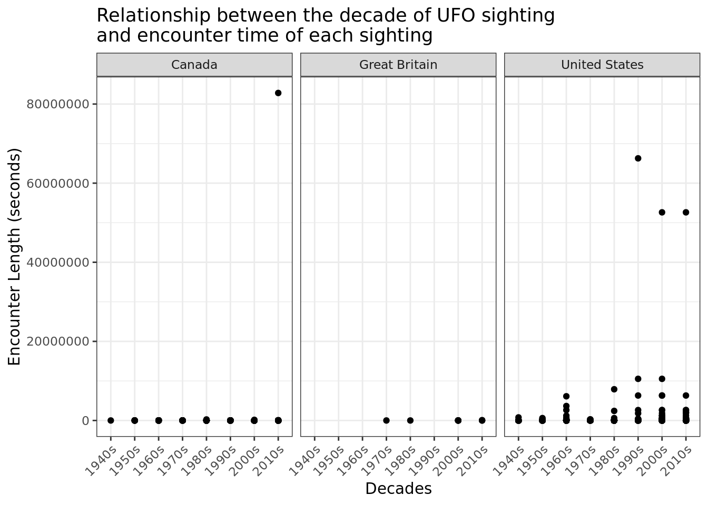

library(tidyverse)
library(tidymodels)Project title
Report
## Introduction and Data
Our topic is UFO sightings.Our topic for this project is UFOs, or “Unidentified Flying Objects”. UFOs as proof of alien life are largely written off as pseudoscience by the scientific community, but this does not take away from the fact that there are tens of thousands of sightings reported annually. In 2020, the Pentagon released videos of unidentified flying objects, sparking the intrigue of enthusiasts and skeptics alike. This is outlined in a New York Times article that also highlights how the government has been looking into unidentified aerial phenomena (UAF; another term for UFO) since the 1950s; articles like these add merit to our research into consistencies in examining UFOs worldwide. Links to NYT article: https://www.nytimes.com/2020/04/28/us/pentagon-ufo-videos.html
The research question we have landed on is the following: What is the relationship between the UFO shape and the length of the encounter time (in seconds) based on the country in which the UFO sighting was reported? Our hope is that this will help examine consistencies and contradictory data when investigating UFO reports worldwide.
Ethical issues do not seem to exist with this data, because we do not have any personal information about the sources of the data. All of the data is anonymous and has no identifying information which eliminates ethical concerns.
The data was uploaded by a man named Sam Arnold to Github on October 28, 2022. It originally came from the National UFO Reporting Center (https://nuforc.org/), and was tidied by a Github user named Sigmond Axel, originally in 2014 (https://github.com/planetsig/ufo-reports). According to the link on Github, this data was initially uploaded as a part of a Tidy Tuesday project. The cases are over 80,000 UFO sightings worldwide.
There are three relevant variables we’re examining from the data set: length of encounter, shape, and country. Data.Encounter duration is measured in seconds and is classified as a “double” variable. Data.shape is also a character variable, and options for this category include “disk”. Finally, the Location.country variable reports what country the particular UFO was sighted in.
Methodology
library(tidyverse)
library(tidymodels)
ufo_sightings <- readr::read_csv("https://raw.githubusercontent.com/rfordatascience/tidytuesday/master/data/2019/2019-06-25/ufo_sightings.csv")Rows: 80332 Columns: 11
── Column specification ────────────────────────────────────────────────────────
Delimiter: ","
chr (8): date_time, city_area, state, country, ufo_shape, described_encounte...
dbl (3): encounter_length, latitude, longitude
ℹ Use `spec()` to retrieve the full column specification for this data.
ℹ Specify the column types or set `show_col_types = FALSE` to quiet this message.mean_ufo <- ufo_sightings |>
drop_na(country, encounter_length) |>
group_by(ufo_shape, country) |>
summarize(mean_time = mean(encounter_length))`summarise()` has grouped output by 'ufo_shape'. You can override using the
`.groups` argument.new_ufo <- left_join(mean_ufo, ufo_sightings)Joining, by = c("ufo_shape", "country")new_ufo |>
ggplot(
aes(x = ufo_shape, y = mean_time, color = country)
) +
geom_line() +
geom_point() +
labs(x = "UFO Shape", y = "Average Length of Ecounter (Seconds)", title = "UFO Encounter Length by Shape and Country") +
theme(axis.text.x = element_text(angle = 90, vjust = .4, hjust = 1)) +
facet_wrap(~country, ncol = 2)
filter_ufo <- mean_ufo |>
filter(ufo_shape != "sphere")
wanted_country <- c("us")
filter_ufo |>
filter(country %in% wanted_country) |>
ggplot(
aes(x = ufo_shape, y = mean_time)
) +
geom_point() +
labs(x = "UFO Shape", y = "Average Length of Ecounter (Seconds)", title = "UFO Encounter Length by Shape and Country") +
theme(axis.text.x = element_text(angle = 90, vjust = .4, hjust = 1)) +
facet_wrap(~country, ncol = 2)
#Gus's Code
filter_cylinder <- ufo_sightings |>
filter(ufo_shape == "cylinder")
filter_light <- ufo_sightings |>
filter(ufo_shape == "light")
filter_circle <- ufo_sightings |>
filter(ufo_shape == "circle")
mean_cylinder <- filter_cylinder |>
drop_na(encounter_length) |>
summarize(mean_time = mean(encounter_length))
mean_light <- filter_light |>
drop_na(encounter_length) |>
summarize(mean_time = mean(encounter_length))
mean_circle <- filter_circle |>
drop_na(encounter_length) |>
summarize(mean_time = mean(encounter_length))
cyl_null_dist <- filter_cylinder |>
specify(response = encounter_length) |>
hypothesize(null = "point", mu = 3426.512) |>
generate(reps = 1000, type = "bootstrap") |>
calculate(stat = "mean")
cyl_null_dist |>
ggplot(
aes(x = stat)
) +
geom_histogram() +
labs(x = "Mean Encouter Length (Seconds)", y = "Count", title = "Distribution of Encounter Length for Cylinders")`stat_bin()` using `bins = 30`. Pick better value with `binwidth`.
filter_cylinder |>
ggplot(
aes(x = encounter_length)
) +
geom_histogram() +
labs(x = "Mean Encouter Length (Seconds)", y = "Count", title = "Distribution of Encounter Length for Cylinders")`stat_bin()` using `bins = 30`. Pick better value with `binwidth`.
To answer our research question, we calculated the mean encounter length based on UFO shape. We did this to help condense over 80,000 observations into a format that wasn’t overwhelming for a reader to understand. We then split up this mean time by country in order to compare the relationship in the context of our research question.
Results
In order to answer the question, which is to investigate what the relationship between the UFO shape and the length of the encounter time (in seconds) is, based on the country, we decided to form scatterplot graphs, based on countries, to visualize the relationship between UFO shape and mean length of time.
We have come to the conclusion that in general, there is no significant correlation between all the different UFO shapes and the mean encounter time. This is exhibited by the consistently low mean encounter times for almost all UFO shapes across countries. However, depending on the country, there are specific UFO shapes that result in high outlying mean encounter times. Specifically, for Great Britain (GB), the cone shaped UFOs yield, on average, a mean encounter time of 2000000 seconds. For Canada, the shapes categorized as “other” yields, on average, around 48000 seconds. This isn’t as significant as that of the mean encounter time for cone shaped UFOs in GB, but it is also an outlier from the average encounter time of close to zero for all other UFO shapes.
Despite these significant outliers, the overwhelmingly low average of mean encounter times across UFO shapes and the countries examined demonstrate that there is not a significant relationship between the shape of a UFO and the length of time it was encountered on Earth.